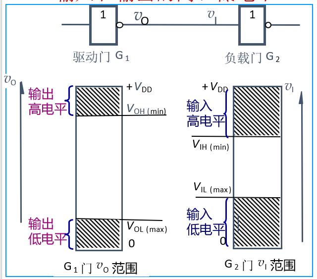

逻辑门电路：基本参数知道叫什么，不要求分析，但是反相器，与非门，或非门的电路要认识（不要求异或门），传输门要知道怎么回时，不要求分析TTL的工作分析，但是看到要认识
逻辑门电路
逻辑门：实现基本逻辑运算和复合逻辑运算的单元电路
逻辑门电路的分类
- 分立门电路
- 二极管门电路
- 三极管门电路
- 集成门电路
- MOS门电路
- NMOS门
- PMOS门
- CMOS门
- TTL门电路
- MOS门电路
一般特性
输入和输出的高低电平
噪声容限：保证输出电平不变的情况下，输入电平允许波动的范围，表示门电路的抗干扰能力
输入高电平的噪声容限$V_{NH}=V_{OH(min)}-V_{IH(min)}$
输入低电平的噪声容限：$V_{NL}=V_{IL(max)}-V_{OL(max)}$
传输延迟时间
表征门电路开关速度的参数，说明门电路在输入脉冲波形作用下，输出波形相对于输入延迟了多久的时间
功耗
静态功耗：门电路没有状态转换时的功耗，即电源总电流$I_D$和电源电压乘积
动态功耗：指电路输出状态转换时的功耗
对于TTL而言，静态功耗是主要的
CMOS的静态功耗很低，有动态功耗
延时-功耗积
速度功耗综合性指标，用DP表示
扇入与扇出数
扇入数：取决于逻辑门的输入端个数
扇出数：在正常工作情况下，所能带同类门电路的最大数目